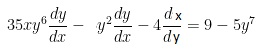
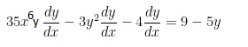
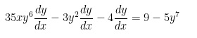

CORRECTO, muy bien has pasado a la siguiente parte
Para hallar la derivada en forma implícita no es necesario despejar \displaystyle y . Basta derivar tanto el miembro derecho como el izquierdo de la igualdad con respecto a la misma variable
1)

2)

3)

1
2
3